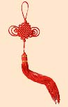

传统节日形成，是一个民族或国家历史文化长期积淀凝聚的过程。中国传统节日多种多样，是我中国悠久历史文化的一个重要组成部分。从远古先民时期发展而来的中华传统节日清晰地记录着中华民族丰富而多彩的社会生活文化内容。
中国的传统节日有除夕（大年三十）、春节（正月初一）、元宵节（正月十五）、清明节（4月5日）、端午节（农历五月初五）、七夕节（农历七月初七）、中秋节（农历八月十五）、重阳节（农历九月初九）、腊八节（农历十二月初八） 等。
此外，我国各少数民族也都保留着自己的传统节日，诸如傣族的泼水节、蒙古族的那达慕大会、彝族的火把节、瑶族的达努节、白族的三月街、壮族的歌圩、藏族的藏历年和望果节、苗族的跳花节等。
